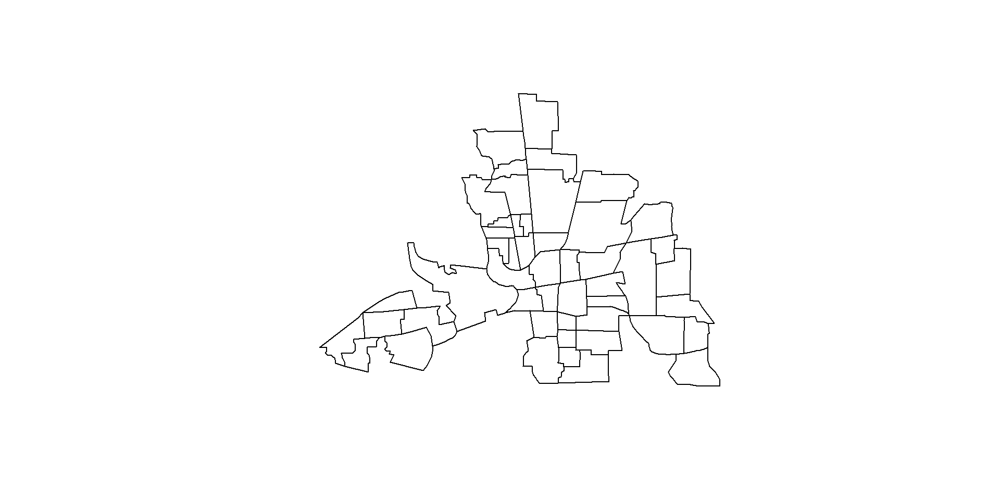
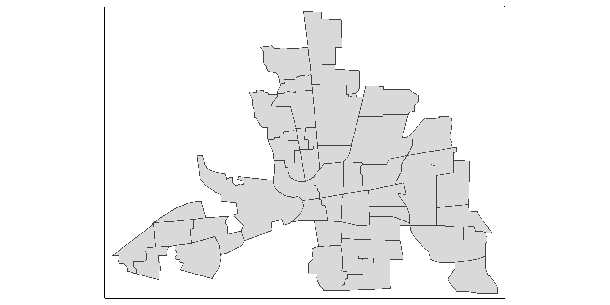
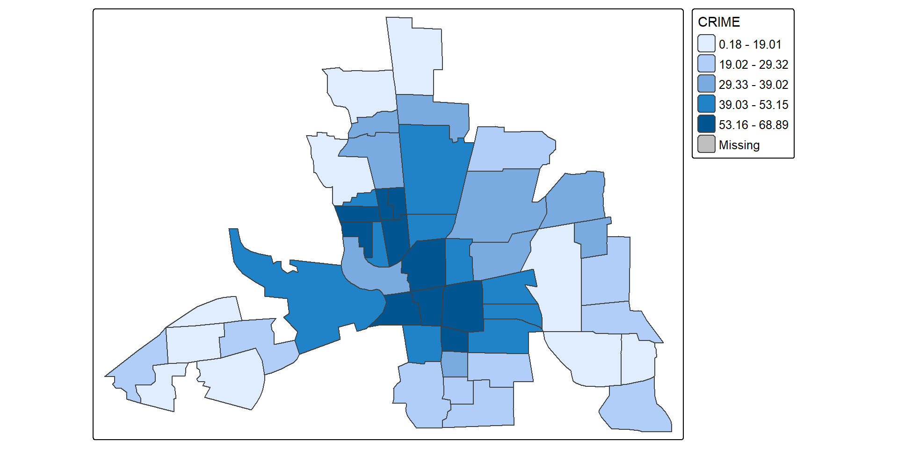
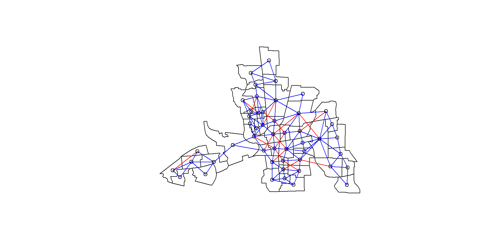
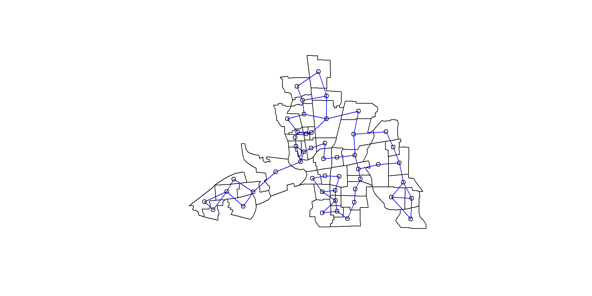
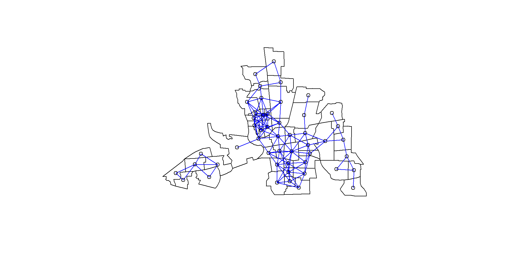
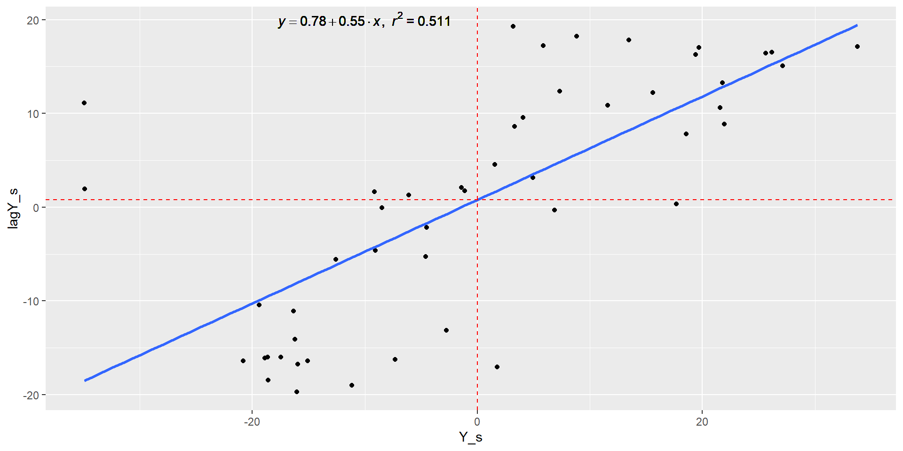
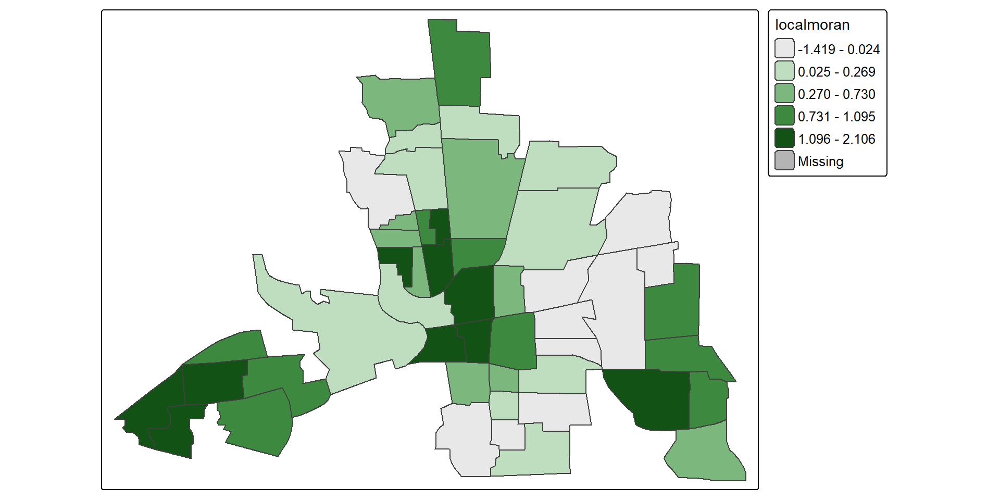

Chapter 3 - Spatial Lattice Data I
Throughout these lectures we use the Boston house-price data, Columbus crime data, and EU regional data collected at NUTS 2 level.
A spatial data set includes the geometry of the spatial units, spatial coordinates or other spatial indexing information, and the attributes associated with each unit. These attributes may include economic, demographic, social, environmental, or other variables.
The three example data sets illustrate the same lattice-data idea: each observation belongs to a spatial unit, and each unit has both geometry and attributes. The geometry lets us construct neighbourhood relationships; the attributes are the variables we analyse.
A major pleasure in working with spatial data is their visualisation. Maps are amongst the most compelling graphics.
The Columbus data provide a spatially referenced example used throughout the lecture.


Plot of Crime Variable
tm_shape(columbus) + tm_polygons(style="quantile", col = "CRIME") +
tm_legend(outside = TRUE, text.size = .8)
EU NUTS 2 level GDP per capita (Euros), 2009.

Tobler’s first law of geography:
“Everything is related to everything else, but close things are more related than things that are far apart.”
From this definition, we need to identify:
For each unit we therefore need a list of neighbours and a corresponding set of spatial weights.
Spatial dependence in a collection of sample observations refers to the fact that an observation associated with location \(i\) depends on observations at locations \(j\), where \(i\neq j\).
Why does spatial dependence occur? Two main reasons are highlighted by LeSage (1998, pp. 4–5):
Positive spatial dependence
Objects—points, areas, or lines—that are close in space tend to assume similar values. This produces spatial clustering of similar values.
Negative spatial dependence
Objects that are close in space tend to assume dissimilar values. This can produce an alternating or checkerboard-like arrangement.
Spatial dependence can therefore take the form of spatial correlation.
Ref: Giuseppe Arbia lecture notes, SEAI 2011.
The level of spatial dependence can be explored using graphical techniques and statistical measures:
Cliff and Ord (1972, 1975, 1981) found Moran’s \(I\) to be a particularly useful measure in many settings.
Global Moran’s \(I\) combines attribute similarity and locational similarity.
For a variable \(y\), let
\[ z_i = y_i-\bar y, \]
and let \(W^s=(w^s_{ij})\) denote the row standardizesd spatial weights matrix. The general form of Moran’s \(I\) is
\[ I = \frac{Z'W^sZ}{Z'Z} \]
where
\[ \sum_{i,j=1}^{n}w^s_{ij}=n. \]
For a row-standardised weights matrix, the spatial lag \(W^sZ\) is the weighted mean of neighbouring standardised observations.
For geographic lattice data, there are two broad choices for \(W\) (Arbia, 2006, pp.37-38, Fischer et al., 2010, pp.66-68, LeSage, 1999, pp.11-13):
Neighbourhood relationships can be defined in several ways (Arbia, 2005, p. 37).
For polygon data, a simple definition is contiguity: polygons \(i\) and \(j\) are neighbours when they share part of their boundary.
The three forms considered here are:
A hypothetical five-region configuration is used to construct and interpret a binary contiguity matrix \(W\).

Rook contiguity: define
\[ w_{ij} = \begin{cases} 1, & \text{if regions } i \text{ and } j \text{ share a common side},\\ 0, & \text{otherwise}. \end{cases} \]
The diagonal is normally set to zero, \(w_{ii}=0\), because a region is not treated as its own neighbour.

Bishop contiguity: define
\[ w_{ij} = \begin{cases} 1, & \text{if regions } i \text{ and } j \text{ share a common vertex only},\\ 0, & \text{otherwise}. \end{cases} \]

Queen contiguity: define
\[ w_{ij} = \begin{cases} 1, & \text{if regions } i \text{ and } j \text{ share a common side or vertex},\\ 0, & \text{otherwise}. \end{cases} \]

Difference between Queen and Rook
plot(st_geometry(columbus))
plot(queen_nb, coords, add=TRUE, col="red")
plot(rook_nb, coords, add=TRUE, col="blue")
Neighbourhood relationships may also be defined by distance.
For each spatial unit \(i\), choose the \(k\) observations whose representative locations are closest to \(i\). (k)-nearest-neighbour neighbourhood
For the first-nearest-neighbour case,
\[ w_{ij} = \begin{cases} 1, & \text{if } d_{ij} = \displaystyle\min_{k \neq i} d_{ik}, \\[4pt] 0, & \text{otherwise}. \end{cases} \]
Two units (i) and (j) are neighbours if
\[ w_{ij} = \begin{cases} 1, & \text{if } d_{ij} < d^*, \\[4pt] 0, & \text{otherwise}. \end{cases} \]
where \(d_{ij}\) is the adopted distance measure and \(d^*\) is a chosen critical cut-off.
For observation (1), calculate pairwise centroid distances and identify the closest observation. The first-nearest-neighbour link is then entered in the neighbour structure.
For observation (2), calculate pairwise centroid distances and identify the closest observation. The first-nearest-neighbour link is then entered in the neighbour structure.
For observation (3), calculate pairwise centroid distances and identify the closest observation. The first-nearest-neighbour link is then entered in the neighbour structure.
For observation (4), calculate pairwise centroid distances and identify the closest observation. The first-nearest-neighbour link is then entered in the neighbour structure.
For observation (5), calculate pairwise centroid distances and identify the closest observation. The first-nearest-neighbour link is then entered in the neighbour structure.
Combining the first-nearest-neighbour relationships for all five observations gives the complete first-nearest-neighbour graph.
whois2near=knearneigh(coords,k=2,longlat=TRUE)
knn2columbus=knn2nb(whois2near)
plot(st_geometry(columbus))
plot(knn2columbus, coords, add=TRUE, col="blue")
To define neighbours within a fixed distance, we need a threshold distance.
One way of selecting a threshold is:
distBetwNeigh1=nbdists(knn1columbus,coords,longlat=TRUE)
distBetwNeigh1=unlist(distBetwNeigh1)
distBetwNeigh1 [1] 63.98112 37.46759 57.90275 34.99180 50.68549 60.02289 41.50970 34.99180
[9] 53.16288 42.98225 13.85976 13.85976 15.87821 15.87821 36.74052 20.37838
[17] 42.32020 20.37838 21.89658 50.76316 67.50447 35.75701 42.32020 26.18731
[25] 34.14447 34.14447 25.62287 34.90927 32.08072 32.08072 35.72122 45.38893
[33] 25.62287 44.54357 28.40851 35.72122 32.67643 25.12110 29.91036 47.60799
[41] 45.38893 44.54357 25.12110 33.47541 37.48757 29.91036 51.94091 28.12354
[49] 32.04551For the Columbus example, the maximum first-nearest-neighbour distance is approximately
Neighbour list object:
Number of regions: 49
Number of nonzero links: 252
Percentage nonzero weights: 10.49563
Average number of links: 5.142857
2 disjoint connected subgraphs
Link number distribution:
1 2 3 4 5 6 7 8 9 10 11
4 8 6 2 5 8 6 2 6 1 1
4 least connected regions:
6 10 21 47 with 1 link
1 most connected region:
28 with 11 links
If you examine this neighbourhood list object a bit more closely you will see that, Polygon1 is neighbours with Poly2 and Poly3; Polygon2 is neighbours with Poly1 and Poly4; Polygon3 is neighbours with Poly1, Poly4 and Poly5 and so on:
In calculation of the weights that will be used to create the spatially lagged variables, only the neighbours values are going to be used. For example for the 1st Polygon, the values of neighbouring Poly2 and Poly3 will be used. Before doing this the nb values need to be standardized, so that the row
Here we will work with the Critical Cut-off nearest neighbours
[1] "listw" "nb" [[1]]
[1] 0.5 0.5
[[2]]
[1] 0.5 0.5
[[3]]
[1] 0.3333333 0.3333333 0.3333333
[[4]]
[1] 0.25 0.25 0.25 0.25
[[5]]
[1] 0.2 0.2 0.2 0.2 0.2In matrix format rather than a list:
1 2 3 4 5
1 0.0000000 0.50 0.50 0.0000000 0.0000000
2 0.5000000 0.00 0.00 0.5000000 0.0000000
3 0.3333333 0.00 0.00 0.3333333 0.3333333
4 0.0000000 0.25 0.25 0.0000000 0.0000000
5 0.0000000 0.00 0.20 0.0000000 0.0000000Choosing a threshold of \(68\) therefore guarantees that every centroid has at least one neighbour. As you can see row sum of the \(W^s\) is always 1, we row-standardized the W matrix.

The level of spatial dependence (spatial autocorrelation) can be explored with:
To simplify notation:
Moran’s \(I\) is a global measure: it provides one summary of spatial autocorrelation for the entire spatial pattern.
\[ I = \frac{Z'W^sZ}{Z'Z} \]
With row-standardised \(W^s\), this is closely related to the cross-product between the centred variable \(Z'=Y-\bar{Y}\) and its spatial lag \(W^sZ\).
Under the randomisation null hypothesis, the expected value of Moran’s \(I\) is
\[ E(I)=-\frac{1}{n-1}. \]
Thus, under the null, Moran’s \(I\) is not centred exactly at zero for a finite sample. As \(n\) increases,
\[ E(I)\longrightarrow 0. \]
A standardised test statistic can be constructed as
\[ Z_I= \frac{I-E(I)} {\sqrt{\operatorname{Var}(I)}}. \]
The variance depends on the spatial weights and on the assumptions used for the reference distribution.
Ref: Fischer & Wang (2011), p. 25.
\[ \operatorname{Var}(I) = \frac{N S_4 - S_3 S_5} {(N-1)(N-2)(N-3)W^2} - [E(I)]^2 \]
where
\[ S_1 = \frac{1}{2} \sum_i \sum_j (w_{ij} - w_{ji})^2 \]
\[ S_2 = \sum_i \left( \sum_j w_{ij} - \sum_j w_{ji} \right)^2 \]
\[ S_3 = \frac{ N^{-1}\sum_i (x_i-\bar{x})^4 }{ \left[ N^{-1}\sum_i (x_i-\bar{x})^2 \right]^2 } \]
and
\[ S_4 = (N^2-3N+3)S_1 - NS_2 + 3W^2 \]
\[ S_5 = (N^2-N)S_1 - 2NS_2 + 6W^2 \]
Two broad approaches are used to assess whether an observed Moran’s \(I\) departs significantly from the null hypothesis of no spatial autocorrelation:
Ref: lecture comparison example and linked video, around minute 22:25.
For the Columbus CRIME variable, first centre the observations:
\[ z_i = y_i-\bar y. \]
The first part of the centred vector in the original analysis is:
[1] -19.402844 -16.327070 -4.502043 -2.741064 15.602686 -9.062166
[7] -34.950555 3.297034 -4.612907 -1.127989 27.146624 21.576845
[13] 11.587305 21.937308 13.456663 19.709887 1.739950 8.833662
[19] 19.393141 -34.905027 4.945250 -1.423776 -15.080320 3.169047
[25] 26.170351 5.840918 17.665606 21.790961 25.621622 33.763220
[31] -17.451610 -15.983232 6.839339 -11.154796 4.046229 -20.823268
[37] 7.316252 18.582114 -16.027961 -18.887525 -16.223678 -18.636934
[43] 1.534788 -9.166561 -6.100336 -18.598291 -7.305963 -8.483558
[49] -12.587333The critical-cut-off neighbourhood is then represented through a row-standardised spatial weights matrix \(W^{(s)}\).
1 2 3 4 5 6 7 8 9 10 11 12 13 14 15 16
1 0.0000000 0.50 0.50 0.0000000 0.0000000 0 0.00 0.00 0 0 0.0 0.0 0 0 0.0 0
2 0.5000000 0.00 0.00 0.5000000 0.0000000 0 0.00 0.00 0 0 0.0 0.0 0 0 0.0 0
3 0.3333333 0.00 0.00 0.3333333 0.3333333 0 0.00 0.00 0 0 0.0 0.0 0 0 0.0 0
4 0.0000000 0.25 0.25 0.0000000 0.0000000 0 0.25 0.25 0 0 0.0 0.0 0 0 0.0 0
5 0.0000000 0.00 0.20 0.0000000 0.0000000 0 0.00 0.20 0 0 0.2 0.2 0 0 0.2 0
6 0.0000000 0.00 0.00 0.0000000 0.0000000 0 0.00 0.00 1 0 0.0 0.0 0 0 0.0 0
17 18 19 20 21 22 23 24 25 26 27 28 29 30 31 32 33 34 35 36 37 38 39 40 41 42
1 0 0 0 0 0 0 0 0 0 0 0 0 0 0 0 0 0 0 0 0 0 0 0 0 0 0
2 0 0 0 0 0 0 0 0 0 0 0 0 0 0 0 0 0 0 0 0 0 0 0 0 0 0
3 0 0 0 0 0 0 0 0 0 0 0 0 0 0 0 0 0 0 0 0 0 0 0 0 0 0
4 0 0 0 0 0 0 0 0 0 0 0 0 0 0 0 0 0 0 0 0 0 0 0 0 0 0
5 0 0 0 0 0 0 0 0 0 0 0 0 0 0 0 0 0 0 0 0 0 0 0 0 0 0
6 0 0 0 0 0 0 0 0 0 0 0 0 0 0 0 0 0 0 0 0 0 0 0 0 0 0
43 44 45 46 47 48 49
1 0 0 0 0 0 0 0
2 0 0 0 0 0 0 0
3 0 0 0 0 0 0 0
4 0 0 0 0 0 0 0
5 0 0 0 0 0 0 0
6 0 0 0 0 0 0 0Using matrix notation with centred observations \(z\) and a row-standardised matrix \(W^{(s)}\),
\[ I= \frac{Z' W^sZ} {Z'Z}. \]
Y_s = columbus$CRIME - mean(columbus$CRIME)
lagY_s <- lag.listw(dnbTresh1.listw, Y_s)
moransI = t(Y_s)%*%weightsmatrix_s%*%Y_s/(t(Y_s)%*%Y_s)
moransI [,1]
[1,] 0.5518257For the Columbus CRIME example in the lecture,
\[ I=0.5518257. \]
The reported randomisation test gives
\[ E(I)=-0.02083333,\qquad \operatorname{Var}(I)=0.01038068, \]
with a standard deviate of \(5.6206\) and a very small \(p\)-value.
Moran I test under randomisation
data: columbus$CRIME
weights: dnbTresh1.listw
Moran I statistic standard deviate = 5.6206, p-value = 9.514e-09
alternative hypothesis: greater
sample estimates:
Moran I statistic Expectation Variance
0.55182569 -0.02083333 0.01038068 The Moran scatter plot places the centred or standardised variable on the horizontal axis and its spatial lag on the vertical axis:
\[ Z_i \quad \text{versus} \quad (WZ)_i. \]
When \(W\) and \(z\) are standardised consistently, the slope of the fitted line is Moran’s \(I\).
The plot therefore links the global statistic to the local behaviour of individual observations.
lm_eqn <- function(df, y, x){
m <- lm(y ~ x, df);
eq <- substitute(italic(y) == a + b %.% italic(x)*","~~italic(r)^2~"="~r2,
list(a = format(unname(coef(m)[1]), digits = 2),
b = format(unname(coef(m)[2]), digits = 2),
r2 = format(summary(m)$r.squared, digits = 3)))
as.character(as.expression(eq));
}
dataMoransI = data.frame(Y_s, lagY_s)
library(ggplot2)
ggplot(dataMoransI, aes(x = Y_s, y = lagY_s)) + geom_point() + geom_smooth(method = "lm", se=FALSE)+geom_text(x = -10, y = 20, label = lm_eqn(dataMoransI,lagY_s,Y_s), parse = TRUE)+geom_vline(xintercept=0, linetype="dashed", color = "red")+geom_hline(yintercept=0.78, linetype="dashed", color = "red")

The Moran scatter plot is partitioned into four quadrants:
| Quadrant | Observation | Neighbours | Interpretation |
|---|---|---|---|
| High–High | High | High | positive association / high-value cluster |
| Low–Low | Low | Low | positive association / low-value cluster |
| High–Low | High | Low | negative association / spatial outlier |
| Low–High | Low | High | negative association / spatial outlier |
The High–High and Low–Low quadrants represent positive spatial autocorrelation.
The High–Low and Low–High quadrants represent negative spatial autocorrelation.

Geary’s \(C\) focuses on squared differences between neighbouring observations:
\[ C= \frac{(n-1)}{2S_0} \frac{ \displaystyle\sum_{i=1}^{n}\sum_{j=1}^{n} w_{ij}(y_i-y_j)^2 }{ \displaystyle\sum_{i=1}^{n}(y_i-\bar y)^2 }. \]
where
\[ S_0=\sum_i\sum_j w_{ij}. \]
Interpretation is opposite in direction to Moran’s \(I\):
A non-parametric spatial correlogram is an alternative way of studying global spatial dependence.
Rather than beginning with one predefined weights matrix, it examines the association between pairs of observations as a function of their separation distance.
Conceptually,
\[ \operatorname{Cov}(z_i,z_j) = f(d_{ij})+\varepsilon_{ij}, \]
where
This allows us to ask how spatial association changes as distance increases.
Local Indicators of Spatial Association (LISA) were introduced by Anselin (1995) to decompose global spatial autocorrelation into contributions from individual observations.
A common form of the local Moran statistic for area \(i\) is
\[ I_i = \frac{z_i}{m_2} \sum_j w_{ij}z_j, \]
where
\[ z_i=y_i-\bar y, \qquad m_2=\frac{1}{n}\sum_i z_i^2. \]
The summation runs over the neighbourhood of area \(i\).
The collection of local Moran statistics is related to the global Moran statistic: their sum is proportional to global Moran’s \(I\).
Local spatial clusters—often called hot spots or cold spots—may be identified as locations, or sets of contiguous locations, for which a LISA statistic is significant.
The null hypothesis is no local spatial association.
Because the exact distribution of a generic LISA statistic can be difficult to obtain, a common alternative is a conditional randomisation / permutation procedure that produces empirical pseudo-\(p\)-values.
Ii E.Ii Var.Ii Z.Ii Pr(z != E(Ii))
1 0.73681849 -0.0285985420 0.666144891 0.9378077 0.34834327
2 0.65915397 -0.0202502140 0.475741297 0.9850149 0.32461676
3 0.03579329 -0.0015396867 0.024041007 0.2407777 0.80972741
4 0.13113818 -0.0005707572 0.006541757 1.6284260 0.10343458
5 0.69380337 -0.0184931910 0.162742823 1.7656716 0.07745096
6 0.15242670 -0.0062384562 0.303777355 0.2878749 0.77344247Plot of the Local Moran Statistics
tm_shape(columbus) + tm_polygons(style="quantile", col = "localmoran") +
tm_legend(outside = TRUE, text.size = .8)
In R, local Moran statistics can be calculated with spdep::localmoran():
Ii E.Ii Var.Ii Z.Ii Pr(z != E(Ii))
1 0.736818491 -2.859854e-02 0.6661448908 0.93780765 0.3483432685
2 0.659153968 -2.025021e-02 0.4757412970 0.98501488 0.3246167634
3 0.035793288 -1.539687e-03 0.0240410072 0.24077770 0.8097274126
4 0.131138176 -5.707572e-04 0.0065417568 1.62842603 0.1034345818
5 0.693803371 -1.849319e-02 0.1627428232 1.76567158 0.0774509642
6 0.152426700 -6.238456e-03 0.3037773549 0.28787494 0.7734424674
7 -1.418605235 -9.279429e-02 0.7547857820 -1.52605345 0.1269965546
8 0.103319296 -8.257717e-04 0.0050383143 1.46722284 0.1423154446
9 0.088187389 -1.616451e-03 0.0386977724 0.45651171 0.6480220495
10 -0.007156422 -9.665465e-05 0.0047356202 -0.10258928 0.9182889508
11 1.489116910 -5.598153e-02 0.2387512105 3.16215652 0.0015660536
12 0.834073870 -3.536625e-02 0.1351553596 2.36495586 0.0180322198
13 0.459183376 -1.019948e-02 0.0526252173 2.04611609 0.0407449499
14 0.708918984 -3.655778e-02 0.1591203691 1.86883613 0.0616456170
15 0.875366588 -1.375586e-02 0.0828431006 3.08911022 0.0020075694
16 1.223927852 -2.951083e-02 0.1293875235 3.48463177 0.0004928147
17 -0.108094629 -2.299782e-04 0.0035956407 -1.79883361 0.0720450046
18 0.587470453 -5.927816e-03 0.0266215244 3.63688706 0.0002759529
19 1.151223098 -2.856995e-02 0.1694747499 2.86584918 0.0041589234
20 -0.247951607 -9.255269e-02 0.7530211176 -0.17907889 0.8578757561
21 0.057144088 -1.857760e-03 0.0908611332 0.19573863 0.8448147484
22 -0.010918574 -1.539914e-04 0.0011236363 -0.32113253 0.7481099581
23 0.900849470 -1.727564e-02 0.2654944353 1.78186236 0.0747716792
24 0.222445111 -7.629051e-04 0.0046550365 3.27150994 0.0010697483
25 1.576737186 -5.202741e-02 0.2570965315 3.21225647 0.0013169675
26 0.366611808 -2.591644e-03 0.0188644701 2.68808779 0.0071862501
27 0.023496701 -2.370665e-02 0.1689066665 0.11485488 0.9085601515
28 1.054294593 -3.607164e-02 0.1219320577 3.12257905 0.0017927395
29 1.534813119 -4.986851e-02 0.2893304273 2.94608293 0.0032182610
30 2.106237710 -8.659660e-02 0.5772443881 2.88619691 0.0038992811
31 1.017447516 -2.313578e-02 0.5419314656 1.41352881 0.1575002960
32 0.975052651 -1.940628e-02 0.2975917603 1.82295690 0.0683099184
33 -0.008281905 -3.553378e-03 0.0258399512 -0.02941576 0.9765330041
34 0.771608734 -9.452275e-03 0.1464202875 2.04119422 0.0412315257
35 0.140766915 -1.243695e-03 0.0090650426 1.49154332 0.1358189064
36 1.243242522 -3.293904e-02 0.2856021104 2.38798590 0.0169409917
37 0.330451865 -4.066216e-03 0.0247289081 2.12724311 0.0333998888
38 0.529422011 -2.623031e-02 0.1153931242 1.63573582 0.1018948896
39 1.151957408 -1.951505e-02 0.4588139896 1.72947288 0.0837244959
40 1.109043195 -2.709962e-02 0.6322045881 1.42890746 0.1530308318
41 0.831677994 -1.999456e-02 0.3064288938 1.53853646 0.1239175009
42 1.086553172 -2.638530e-02 0.6159922141 1.41802388 0.1561837935
43 0.025506418 -1.789410e-04 0.0008082627 0.90346090 0.3662813328
44 -0.055325820 -6.383017e-03 0.0462851033 -0.22749310 0.8200403375
45 -0.028304126 -2.826966e-03 0.0252748048 -0.16025335 0.8726815086
46 1.249537703 -2.627600e-02 0.6135092567 1.62883353 0.1033482644
47 0.432196383 -4.054787e-03 0.1978789359 0.98070146 0.3267399841
48 0.002170906 -5.467253e-03 0.0396811746 0.03834391 0.9694134795
49 0.254910325 -1.203595e-02 0.1363680392 0.72288227 0.4697522160
attr(,"call")
spdep::localmoran(x = Y_s, listw = dnbTresh1.listw)
attr(,"class")
[1] "localmoran" "matrix" "array"
attr(,"quadr")
mean median pysal
1 Low-Low Low-Low Low-Low
2 Low-Low Low-Low Low-Low
3 Low-Low Low-Low Low-Low
4 Low-Low Low-Low Low-Low
5 High-High High-High High-High
6 Low-Low Low-Low Low-Low
7 Low-High Low-High Low-High
8 High-High High-High High-High
9 Low-Low Low-Low Low-Low
10 Low-High Low-Low Low-High
11 High-High High-High High-High
12 High-High High-High High-High
13 High-High High-High High-High
14 High-High High-High High-High
15 High-High High-High High-High
16 High-High High-High High-High
17 High-Low High-Low High-Low
18 High-High High-High High-High
19 High-High High-High High-High
20 Low-High Low-High Low-High
21 High-High High-High High-High
22 Low-High Low-High Low-High
23 Low-Low Low-Low Low-Low
24 High-High High-High High-High
25 High-High High-High High-High
26 High-High High-High High-High
27 High-Low High-Low High-High
28 High-High High-High High-High
29 High-High High-High High-High
30 High-High High-High High-High
31 Low-Low Low-Low Low-Low
32 Low-Low Low-Low Low-Low
33 High-Low High-Low High-Low
34 Low-Low Low-Low Low-Low
35 High-High High-High High-High
36 Low-Low Low-Low Low-Low
37 High-High High-High High-High
38 High-High High-High High-High
39 Low-Low Low-Low Low-Low
40 Low-Low Low-Low Low-Low
41 Low-Low Low-Low Low-Low
42 Low-Low Low-Low Low-Low
43 High-High High-High High-High
44 Low-High Low-Low Low-High
45 Low-High Low-Low Low-High
46 Low-Low Low-Low Low-Low
47 Low-Low Low-Low Low-Low
48 Low-Low Low-Low Low-Low
49 Low-Low Low-Low Low-LowThe output provides a local statistic for every spatial unit, together with quantities used for inference.